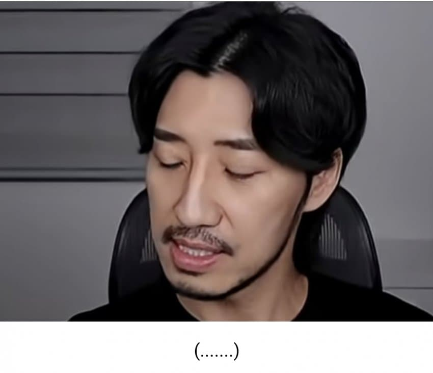
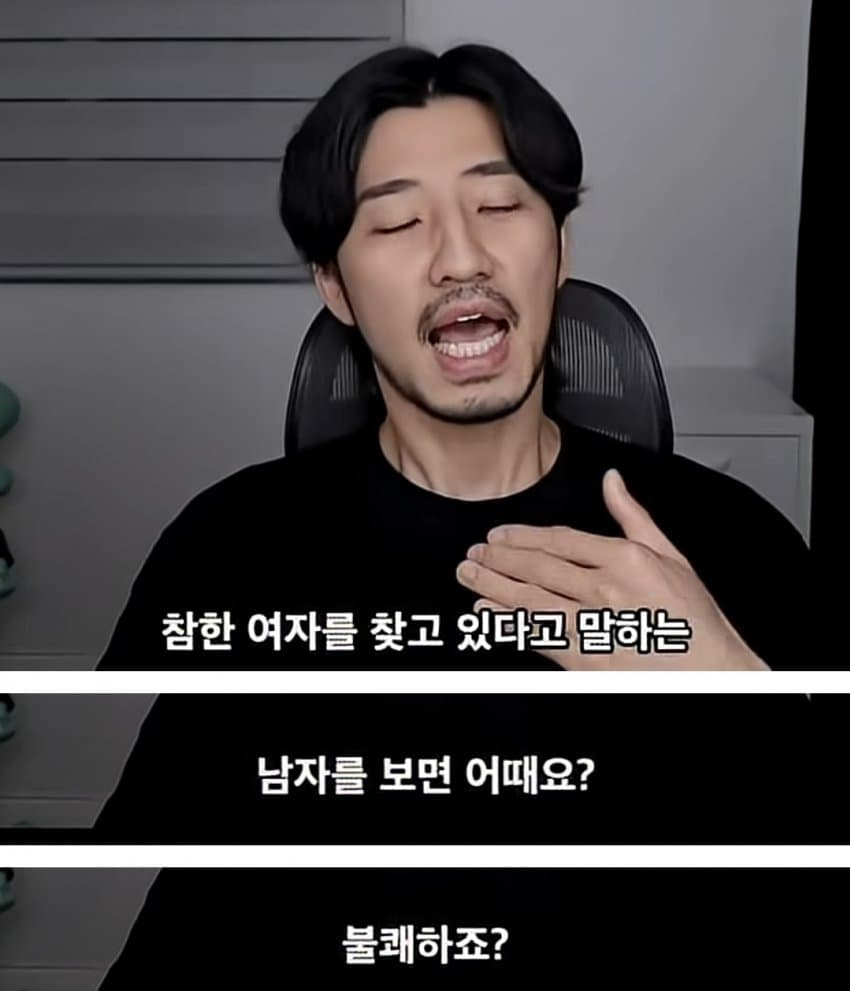

저렇게까지 해석할거 있나
남자나 여자나 멘헤라 존나 싫어함
어릴때나 잘생기거나 예쁘면 멘헤라 감당하고라도 만나지 결혼생각하는 나이에 멘헤라를 어케만남
메신저가 어떤사람인지는 모르겠다만 논리적으로 틀린말은 아니네
어머니가 아닌 여자의 말은 대체로 릴스만큼 의미없음
안정형 찾는거 좋지. 관계의 리스크가 굉장히 줄어드니까. 문제는 안정형을 찾는 이유가 지가 불안형이라서인 케이스 같음.
불안형이라는 간소화되고 미화된 단어보다는
가정교육을 제대로 못받아서 나이처먹고까지 애새끼인 인생 혹은 안타깝게도 뇌 혹은 호르몬 혹은 트라우마 등으로 정신병 소견이 보이는 환자 정도가 맞는거 같은데
애새끼 케이스는 줘패서 어른을 만들어야 하는데 안정형 잡아다 옆에 붙여놓는다고 해결될기 아이지
참한여자 찾습니다 저도
요리잘하고 시부모님 잘모시고 집안살림 잘하는
요새 보면 안정형=감쓰 느낌이던데 진짜 안정형은 애초에 감쓰도 안됨ㅇㅇ 받을 줄 알고. 줄줄 알고 거부할 줄 아는 게 진짜 안정형인데... 요새는 안정형라이팅인가 그냥 오냐오냐하고 받아주고 감쓰짓하면 안정형인줄 알더라
왜냐면 여자들은 죄다 본인들이 환경만 좋으면 안정형이라 생각하거든
따라서 본인이 ㅈㄹ울 하고 관계가 파탄나도 당연히 외부 탓으로 돌림.
내가 불안하다? 그럼 환경이나 남자가 문제임.
환경도 남자 책임임.
결론은 남자 문제임.
난 경제적으로 안정적인 게 좋아. 돈을 많이 벌진 않아도 해고로부터 어느 정도 자유로워서 안정적인 수입이 들어오는 직종. 내 노력이 곧 수입이 되는 직종 같은 건 질색이야
경제적으로 안정 되면 심적으로도 안정 될꺼같은 느낌
안정형의 전제조건은 경제적 안정이 필수적일수밖에 없음.
제아무리 안정형인 사람이라도 돈이 없으면 사람 자체가 심리적이든 생활적이든 뭐든 불안정해질수 밖에 없거든. 여기서 경제적인 안정을 어느 기준에 두느냐에 따라 또 다를꺼라 봄.
병신같은년들
보통 안정형을 찾는 사람들보면 본인이 불안정할때가 많고 그렇게되면 보통 감쓰통이 되니
존경잽이들이 다른말 찾아낸거지 뭐 ㅋㅋㅋ
심리학에서 장기적으로도 화내야할때 화를못내면 오히려 정신병이라는데 뭐가 맞는거임?
진짜 요즘에 유튜브로 심리학배워보니까 밥만 잘먹고 할거만 잘해도 정신병이던데 ㅋㅋ
그냥 상대가 안정형 원한다 하면
아 저도요! 하고 공감해주자
남자들은 순종적인 여자 밀어보자 ㅋㅋ
남자가 말하면 까라면까고 밥떄되면 알아서 차려내고
너무 억까아니냐. 남자든 여자든 안정형이 좋지, 회피형 불안형 좋아하는 사람이 어디있음. 극소수 취향존중은 하지만.
당연한 조건을 굳이 입밖으로 말하는거에 대한 뭔가의 의심스러움? 을 느끼는걸수도
안정형 남자도 싫고 존경할만한 남자도 싫고
그냥 여자들 취향 다 내가 충족 못하니까 열등감 느껴져서 싫다고 하지 그러냐 ㅋㅋ 이런여자 싫다는 항목이 끝이없네
저런년들이 찾는 안정형 남자가 왜 잘 안보이는지 앎? 애초에 안정형남자 = 위기에도 흔들림이 없는 남자 가 아니러 위기관리가 잘되니까 흔들릴 일이 별로 없는 남자임. 말인즉슨 니들이 뭔지랄을해도 다 받아주는 남자가 아니고 애초애 지랄병 심한 니들은 거르니까 볼일이 없다 이거임.
보통 누군가 나를 감정쓰레기통으로 쓰려고하면 계산을 한번 해본다, 이사람이 감쓰짓을 감내할 가치가 있는 사람인가? 그만한 가치가 있으면 감쓰 좀 해주고 아니라면 버리면 그만이지
남페미 오마르 보자마자 걸름
읽을 필요도 없는 똥글일듯
남자들이 듣고싶을 얘기를 썼다해도 기회주의적이거나 본인 우월감을 느끼려는 거겠지
안정형이라는 말이 그정돈가?
너무 비약하는거 같은데
참한 여자 원하면 어딜 여자가 겸상을 해? 하는 이런 가부장적인 남자다 라고 말하는거랑 뭐가 다름
나도 안정형 여자가 좋음. 마통3천 혼수 누가 좋아하겠음 ㅋㅋ
존경 다음 안정 그다음은 뭘까 ㅋㅋㅋ
안정형인 여자가 안정형인 남자를 찾는다면 아무도 뭐라할 사람 없음. 근데 보통 "안정형 남친" 워딩 쓰는 년들은 죄다 불안정하다는게 문제임.